MARKET NEWSROOM
The reporting
behind the signals
A visual source ledger for the selected market, connecting original reporting with the current intelligence view.
LEAD REPORTING
Stories setting the frame
The opening stories in the current regional source set.

ABC News · 2026-10-24 18:00:00 UTC
Ghosts of past reports linger for NT child protection review
VIEW STORY ↗
ABC News · 2026-10-24 18:00:00 UTC
Women report stalkers abusing exercise apps to harass them
VIEW STORY ↗
ABC News · 2026-10-24 18:00:00 UTC
Kiwi expats could prove crucial in New Zealand's 'knife edge' election
VIEW STORY ↗
ABC News · 2026-10-24 18:00:00 UTC
'Shouldn't have to wear a flak jacket': Haines spoke of risks to MPs before attack
VIEW STORY ↗MORE HEADLINES
Follow the reporting
The remaining 59 stories in the current source order.
Headlines 005—016 12 stories
 005
005ABC News · 2026-10-24 17:45:00 UTC
↗'Did we do well today?': This is what it takes to keep an independent restaurant open
 006
006ABC News · 2026-10-24 13:42:37 UTC
↗007Met Police received letter about Meghan Markle's father in 2019
ABC News · 2026-10-24 13:09:37 UTC
↗Ukraine says Starlink at normal speed after delays impede military
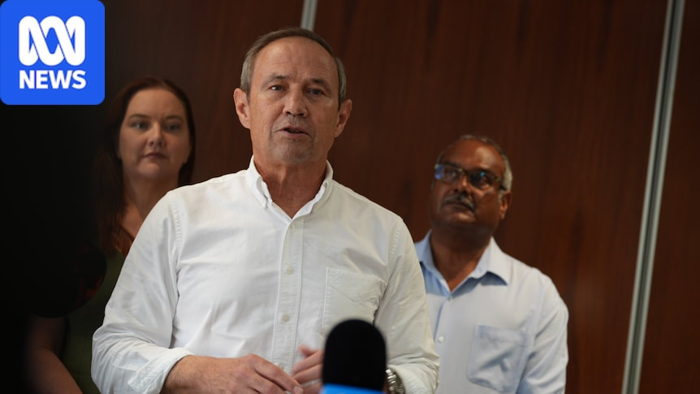
008ABC News · 2026-10-24 09:53:46 UTC
↗WA premier confronted by South Hedland community members
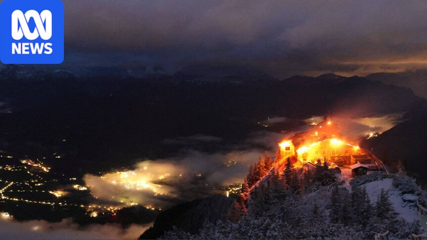
009ABC News · 2026-10-24 09:16:03 UTC
↗010Fire breaks out at Hitler's mountain retreat, suspect arrested
ABC News · 2026-10-24 08:43:00 UTC
↗011Daughters joyful to 'breathe same air' as Donna Nelson returns to Perth
ABC News · 2026-10-24 07:45:38 UTC
↗012Jillaroos hammer England 78-0 but superstar's World Cup ends in hospital
ABC News · 2026-10-24 05:00:00 UTC
↗How a data centre united Australia's gaming community
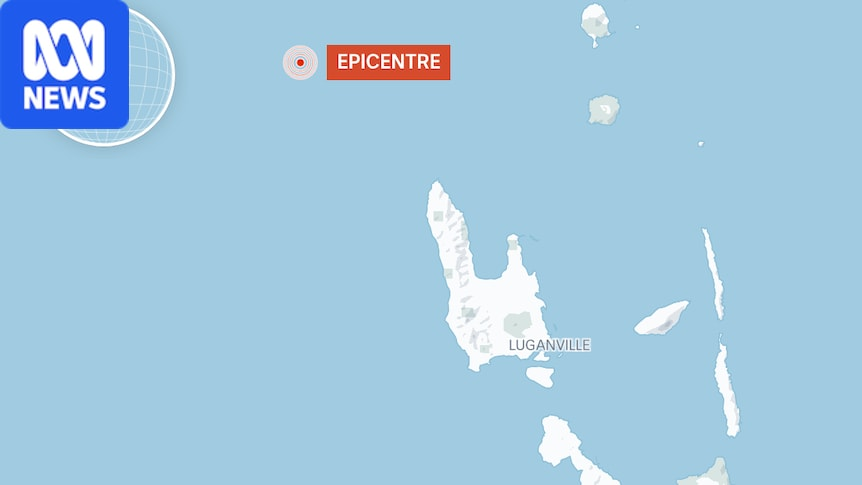
013ABC News · 2026-10-24 04:31:41 UTC
↗014Two large earthquakes off coast of Vanuatu prompt tsunami warning
ABC News · 2026-10-24 04:11:35 UTC
↗Years of conflict splits voters in former Netanyahu stronghold
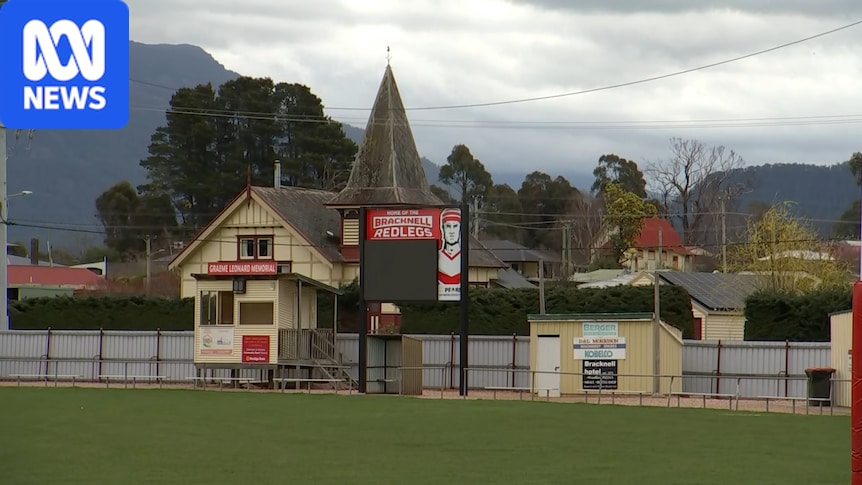
015ABC News · 2026-10-24 04:06:49 UTC
↗016Tasmanian football club coach charged with rape
ABC News · 2026-10-24 03:29:23 UTC
↗Former Port Adelaide AFL player Daniel Stewart dies at 37
Headlines 017—028 12 stories
017 022
022 023
023 026
026
ABC News · 2026-10-24 02:34:01 UTC
↗018Elon Musk has a lot to lose at US midterms as pollsters tip blue wave
ABC News · 2026-10-24 02:30:59 UTC
↗Amanda Stoker to replace Amanda Camm as child safety and DV minister
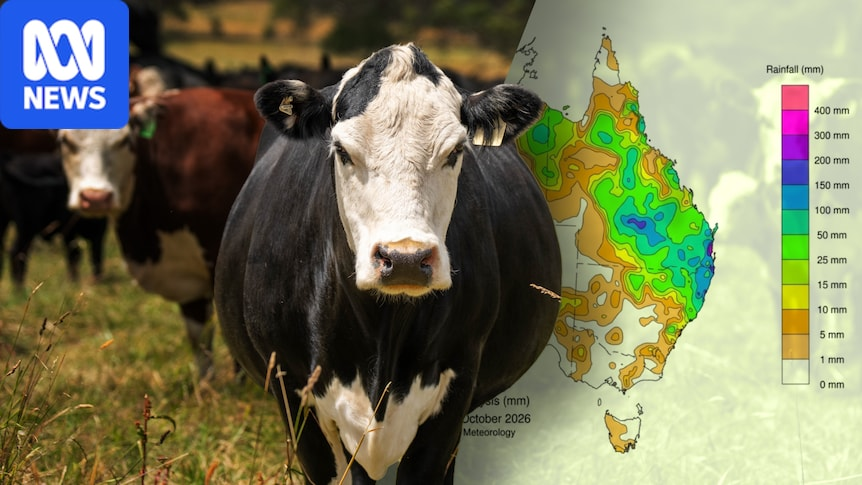
019ABC News · 2026-10-24 02:06:02 UTC
↗020Cattle prices hit 'a new gear' as rain tumbles down
ABC News · 2026-10-24 01:22:11 UTC
↗021Number of injured rises to 76 after deadly earthquake in Tibet
SMH Business · 2026-10-25 00:01:00+11:00
↗ŌĆśHistoric day for aviationŌĆÖ: First flight from Western Sydney departs today
022The Age Business · 2026-10-25 00:01:00+11:00
↗‘Historic day for aviation’: First flight from Western Sydney departs today
023SMH Business · 2026-10-24 15:00:00+11:00
↗024ŌĆśSlow burnŌĆÖ: Western Sydney AirportŌĆÖs real challenge awaits after launch
The Age Business · 2026-10-24 15:00:00+11:00
↗025‘Slow burn’: Western Sydney Airport’s real challenge awaits after launch
SMH Business · 2026-10-24 05:00:00+11:00
↗The gym junkie tech boss whose company sustained a $3 billion wipeout
026SMH Business · 2026-10-23 18:10:00+11:00
↗027The princeŌĆÖs bet on Trump is blowing up in his face
The Age Business · 2026-10-23 18:10:00+11:00
↗The prince’s bet on Trump is blowing up in his face
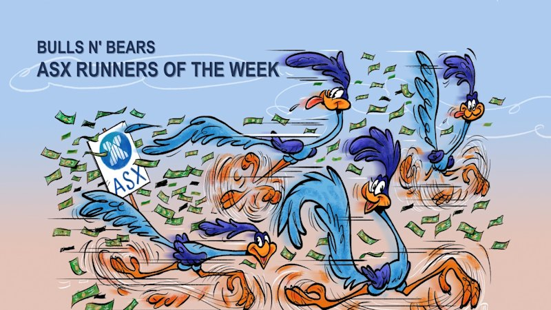
028SMH Business · 2026-10-23 17:34:28+11:00
↗ASX Runners of the Week: Energy Technologies, RAS Tech & Tambourah
Headlines 029—040 12 stories
029 032
032 039
039
SMH Business · 2026-10-23 17:17:03+11:00
↗030Eddie McGuire no longer hosting a footy show on Nine
SMH Business · 2026-10-23 17:00:59+11:00
↗Cap Raise Crucible: Gold books, big fees and bruised punters
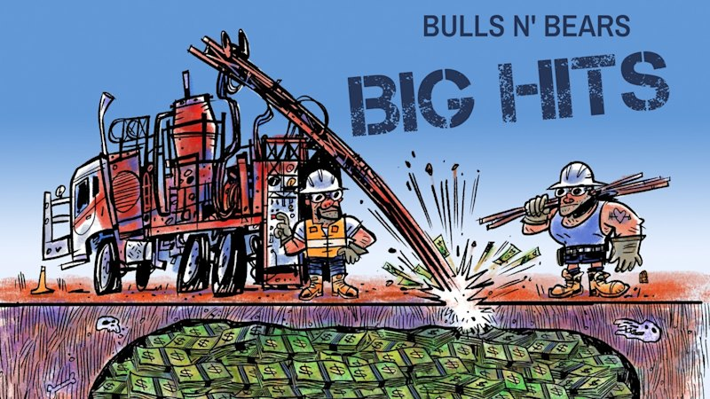
031SMH Business · 2026-10-23 16:59:49+11:00
↗Big Hits: Rapid Critical Metals, Benz Mining, Encounter Resources
032SMH Business · 2026-10-23 15:57:59+11:00
↗033ŌĆśWatch out, IŌĆÖll wait for you outsideŌĆÖ: Aldi repealed self-serve checkout policy that fuelled abuse, threats
The Age Business · 2026-10-23 15:57:59+11:00
↗‘Watch out, I’ll wait for you outside’: Aldi repealed self-serve checkout policy that fuelled abuse, threats
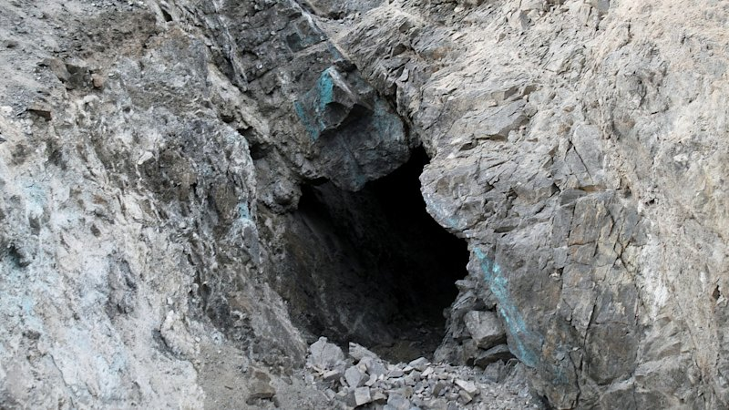
034SMH Business · 2026-10-23 13:58:31+11:00
↗Flagship sweetens Chilean copper deal with 50% price cut
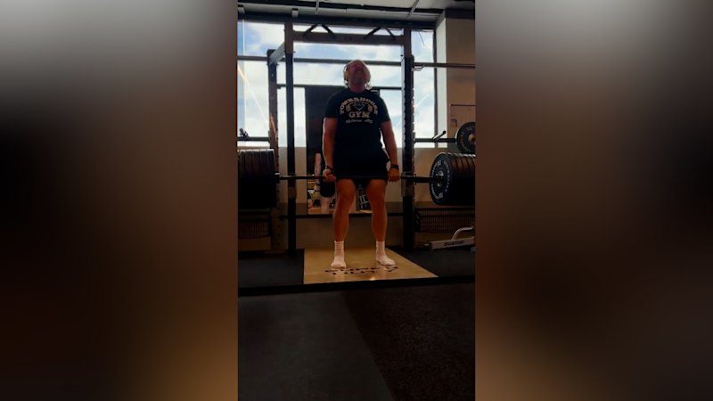
035SMH Business · 2026-10-23 13:15:01+11:00
↗NextDC boss Craig Scroggie goes viral with gym video
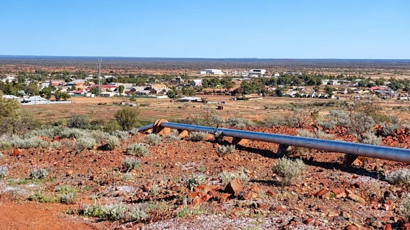
036SMH Business · 2026-10-23 12:06:48+11:00
↗037Golden Dragon drills for gold beneath 3km WA anomaly
SMH Business · 2026-10-23 11:02:53+11:00
↗038Shares end week down as oil price, AI doubts hit miners
SMH Business · 2026-10-23 06:00:00+11:00
↗I spent thousands on a ŌĆśpotentially dangerousŌĆÖ marathon. IŌĆÖd do it again
039The Age Business · 2026-10-23 06:00:00+11:00
↗040I spent thousands on a ‘potentially dangerous’ marathon. I’d do it again
SMH Business · 2026-10-23 05:01:00+11:00
↗CollingwoodŌĆÖs The Vine Hotel looking for new owner in $4m sale
Headlines 041—052 12 stories
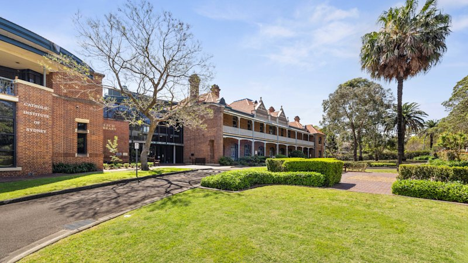
041SMH Business · 2026-10-23 05:01:00+11:00
↗Catholic Church seeking $18m windfall for inner west uni site
 042
042The Age Business · 2026-10-23 05:01:00+11:00
↗043Collingwood’s The Vine Hotel looking for new owner in $4m sale
SMH Business · 2026-10-23 05:00:00+11:00
↗044How the News Corp tabloids lifted SevenŌĆÖs harrowing exclusive
SMH Business · 2026-10-23 05:00:00+11:00
↗The men at work call each other ŌĆśmateŌĆÖ. Why does it make me uncomfortable?
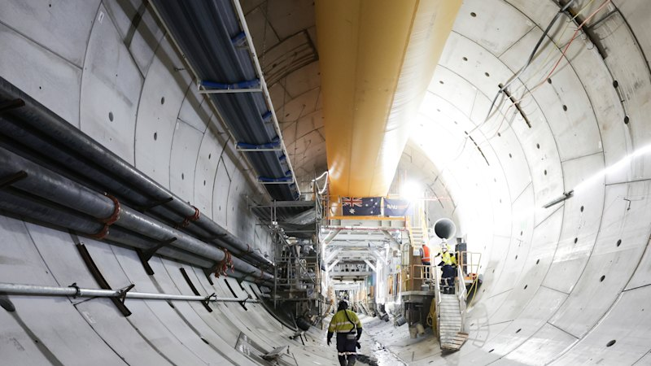
045SMH Business · 2026-10-22 22:00:00+11:00
↗ŌĆśIncredibly disappointingŌĆÖ: Snowy 2.0 cost blows out to $25b in biggest setback yet
 046
046The Age Business · 2026-10-22 22:00:00+11:00
↗047‘Incredibly disappointing’: Snowy 2.0 cost blows out to $25b in biggest setback yet
SMH Business · 2026-10-22 18:01:22+11:00
↗048ASX retreats as energy shares slump; Nick Scali tanks; Westpac axes jobs
The Guardian · 2026-10-23 04:54:47 UTC
↗049Jim Chalmers faces a world of hard choices where the solution to one problem makes the other worse
MacroBusiness · 2026-10-23 21:16:05 UTC
↗050Australia’s $1.4 Trillion Question: How Much of the national Super balance was built by taxpayers?
MacroBusiness · 2026-10-23 13:10:14 UTC
↗Australia’s house price falls are gathering speed
 051
051MacroBusiness · 2026-10-23 13:01:34 UTC
↗Weekend reading and MB media appearances
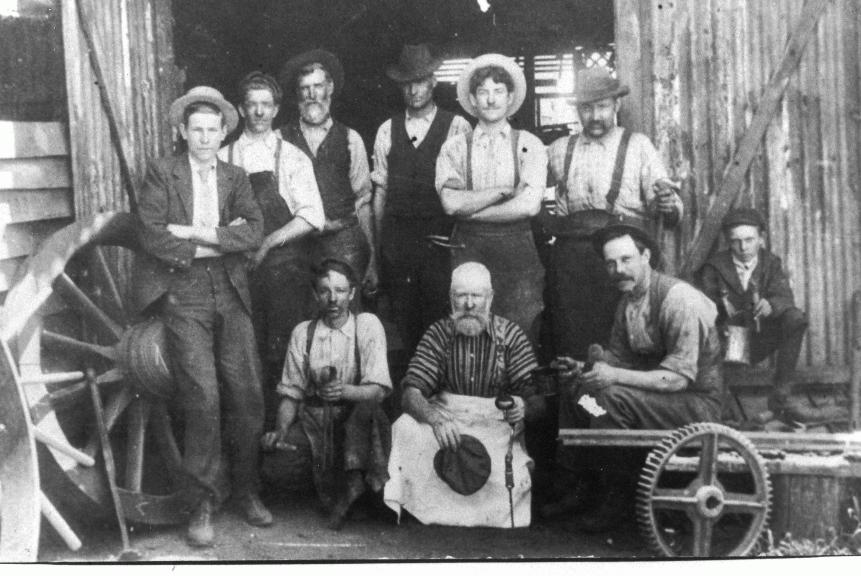
052MacroBusiness · 2026-10-23 07:37:25 UTC
↗MB Radio: Deep T – Global rates, inflation, and Australia’s mortgages
Headlines 053—063 11 stories
053 060
060 061
061
MacroBusiness · 2026-10-23 01:00:21 UTC
↗054Australia’s economic misery will deepen in 2027
MacroBusiness · 2026-10-23 00:30:18 UTC
↗AI to end your lawyer
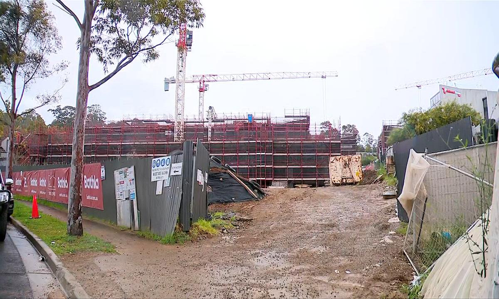
055MacroBusiness · 2026-10-23 00:00:16 UTC
↗056Private credit collapse cripples developers
MacroBusiness · 2026-10-22 23:30:40 UTC
↗057Pilbara killer squeezes the brains out of Fortescue
MacroBusiness · 2026-10-22 23:00:03 UTC
↗058How many international students are too many?
MacroBusiness · 2026-10-22 22:30:06 UTC
↗059Australian dollar flies into growth shock!
MacroBusiness · 2026-10-22 22:17:37 UTC
↗Aussie flash PMI plunges into the red
060MacroBusiness · 2026-10-22 21:30:02 UTC
↗Madman oil rampage hits
061MacroBusiness · 2026-10-22 13:01:55 UTC
↗062House prices are falling everywhere, with worse to come
MacroBusiness · 2026-10-22 01:00:40 UTC
↗063Australia’s budget black holes deepen
MacroBusiness · 2026-10-22 00:45:09 UTC
↗